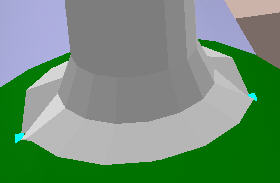

A Steam Loco for MSTS Using 3DCanvas
by Paul "decapod" Gausden
Chapter 6 - Boiler, Funnel and Dome
Boiler
- Add a cylinder primitive to the scene.
- Instead of rotating it this time, I'll shift rotate the object instead (no real reason, other than it's different to last time). I right click on the shift operation button and enter the following:
- Select the cylinder and click on the shift operation - the cylinder should now be in the correct alignment for a boiler.
- Scale the cylinder to the right size:
- Depending on how many polys you want at the end of it all, at this point I usually adjust the number of cylinder sides with the Open Source option for the shape. The boiler is worth using a few more it because of its size and it helps with specular shine. I usually stick to between 20 and 30 sides.
- I run the shift centre plugin to the rear end of the cylinder to give myself a measuring point on the plan.
- Now drag the new group into the Main group and adjust the group position properties to x = 0.0, y=2.83 (from plan centre line + 0.1 for the flange), z = -0.1 (the back of the cylinder is almost on the centre of the model). I also rename the new group "Boiler".
Funnel and Dome...
(The more observant may notice a slight change in the size of the model here, but the principle is the same)
- From the plan, take a few measurements...
- Build two cylinders the same size as the red rectangles... no need to change the number of sides above 16 here, often I actually lower the number to 14 or 12 to cut out lots of polys.
- Select the bottom face of the funnel object and run the "flare extrude" plugin. Enter the height and width or the green box as the extrude and bevel values - enter 2 and 1 for the other values. You could up the extrusions value to 3, but that makes more work later. Press OK.
- Do the same for the lower face of the dome object.
- Repeat for the pale blue rectangle of the funnel.
- For the dome top, repeat again, but this time the bevel value is negative half of the original cylinder diameter and the number of extrusions is increased to 3 (or 4 for extra smoothness).
(for Remembrance, I entered a smaller bevel size to give a more flat topped dome)
- The dome needs a bit of optimising, for this you need to select the object and run the "Weld to Range" plugin available from the amabilis web site. - Enter a value of about 0.03, it should say "15 points welded". Then run the "Optimize" object operation.
- I now use the standard Extrude Object Operation to add a small extrude with a negative bevel (dark blue box), then another extrude with 0.0 bevel for the top (purple line).
- You could leave a flat top, but for just a few extra polys, I add a negative extrude for just over the full height of the funnel and a small negative bevel - this makes the funnel hollow. Then delete the centre circle at the bottom of this extrude (and optimize the object).
- Now drag both new cylinder groups onto the Boiler group and position the groups according to the plan - with the object selected, you can use the Ctrl up/down arrow keys to fine tune the height so the centre of the boiler top just touches the base of both objects.
- Now use the Ctrl key to select both outside points, then move the cursor near one (till it turns yellow) and right drag the points downward simultaneously, till they touch the boiler top.

- Now select the four points next to these two (may require a bit of moving around as 3DC sometimes makes it hard to select these points) and repeat the simultaneous drag down with the right mouse button.
- Repeat again for the next four points, until you get to the centre line points.
- I also repeat steps 11 to 13 for some of the points on the next row up... not so critical on the funnel, but more important for the larger dome.

- Rrepeat 11 to 14 for the Dome. < p>
Et Voila!